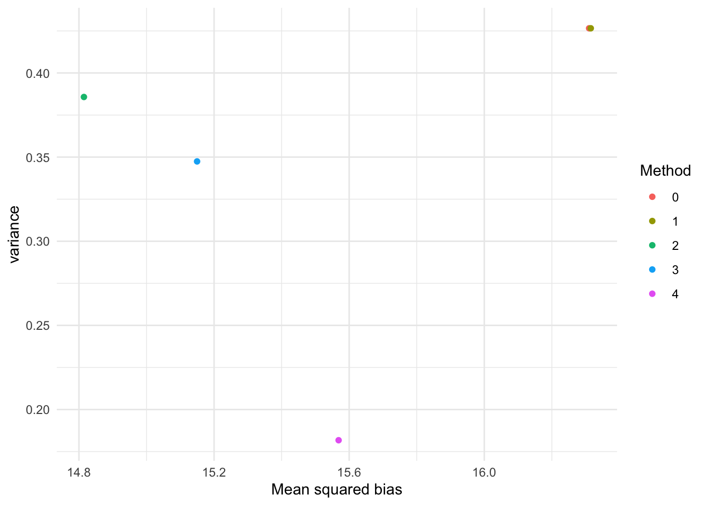

p <- plogis(seq(-5, 5, length.out = 20))
N <- 3:30
nsim <- 10000
# Set-up
empty <- matrix(NA, nrow = length(p), ncol = length(N))
for(e in 0:4) assign(paste0("ebias", e), empty)
for(e in 0:4) assign(paste0("evar", e), empty)
# Run simulation
calc_ebias <- function(westimator) {
mean(1 / var(log((k + 0.5)/(N[j] - k + 0.5))) - westimator)
}
calc_evar <- function(westimator) {
var(1 / var(log((k + 0.5)/(N[j] - k + 0.5))) - westimator)
}
for (i in 1:length(p)) {
for (j in 1:length(N)) {
k <- rbinom(nsim, N[j], p[i])
# 0: Original estimator
westimator <- 1 / (1 / (k + 0.5) + 1 / (N[j] - k + 0.5))
ebias0[i, j] <- calc_ebias(westimator)
evar0[i, j] <- calc_evar(westimator)
# 1: inv Gart estimator
westimator <- 1 / (1 / (k + 0.5) + 1 / (N[j] - k + 0.5))
ebias1[i, j] <- calc_ebias(westimator)
evar1[i, j] <- calc_evar(westimator)
# 2: inv Haldane estimator
westimator <- 1 / (1 / (k + 1) + 1 / (N[j] - k + 1))
ebias2[i, j] <- calc_ebias(westimator)
evar2[i, j] <- calc_evar(westimator)
# 3: inv Goodman estimator
westimator <- N[j] / (N[j] + 1) / (1 / (k + 1) + 1 / (N[j] - k + 1))
ebias3[i, j] <- calc_ebias(westimator)
evar3[i, j] <- calc_evar(westimator)
# 4: inv Plackett estimator
westimator <- (1 / (k) + 1 / (N[j] - k))
westimator[k == 0 | k == N[j]] <- 2 + 1 / (N[j] + 0.5)
ebias4[i, j] <- calc_ebias(westimator)
evar4[i, j] <- calc_evar(westimator)
}
}
ebias <- list(ebias0, ebias1, ebias2, ebias3, ebias4)
evar <- list(evar0, evar1, evar2, evar3, evar4)
ebias_msq <- sapply(ebias, FUN = function(x) mean(x^2))
evar_m <- sapply(evar, FUN = function(x) mean(x))
ebias_msq + evar_m[1] 16.73924 16.73924 15.20046 15.49714 15.75042library(ggplot2)
data.frame(bias = ebias_msq, variance = evar_m, method = 0:4) |>
ggplot(aes(x = bias, y = variance, col = as.factor(method))) +
geom_point(position = position_dodge(width = 0.01)) +
labs(x = "Mean squared bias", "Mean variance", col = "Method") +
theme_minimal()